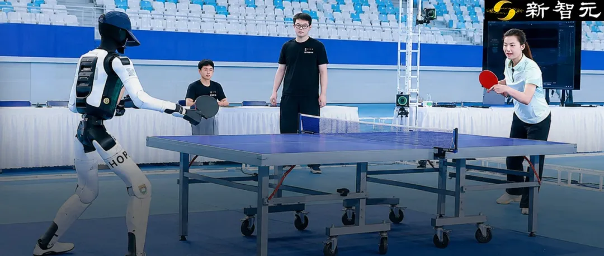

新智元报道
新智元报道

刚刚，2026世界人形机器人运动会冠军诞生！
智元（AGIBOT）首次出征，便以18金16银12铜的傲人战绩，直接斩获金牌榜第一、奖牌榜第一！
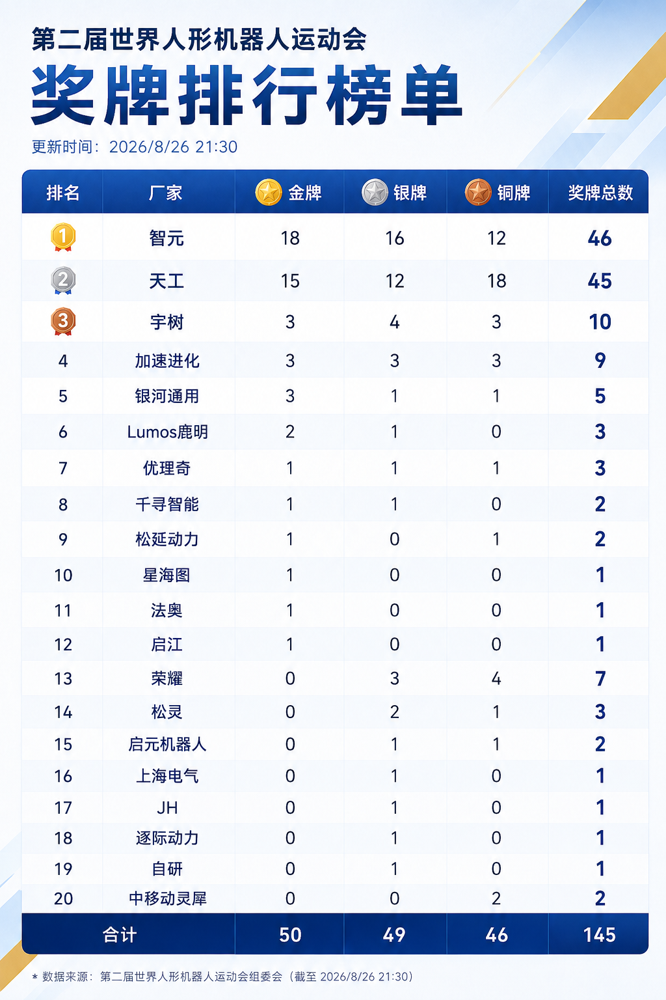
18金16银12铜，一共46枚奖牌。
首次出征，就在金牌榜和奖牌榜双榜登顶。可以说，智元这次是名副其实的冠军。
在16个国家、666支队伍、2056台机器人同台竞技的赛场上，智元机器人靠着全方位、无死角的实力，横扫全场。
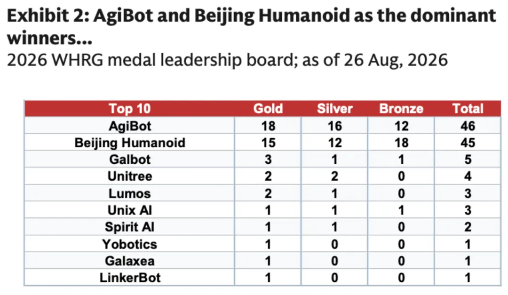
比这一成绩更震撼的，是这个容易被忽略的事实——智元派出的全部参赛机型，清一色都是量产机！
整场比赛，参赛的智元机器人都是零改装，没有赛场特供版，没有定制样机。
更惊人的是，这些在赛场上大杀四方的机器人（远征A3、精灵G2、灵犀X2），和在龙旗工厂里打工的机器人，竟然完全是同一批。
用智元自己的话说，这是真正的「戴得了工牌，赢得了金牌」。
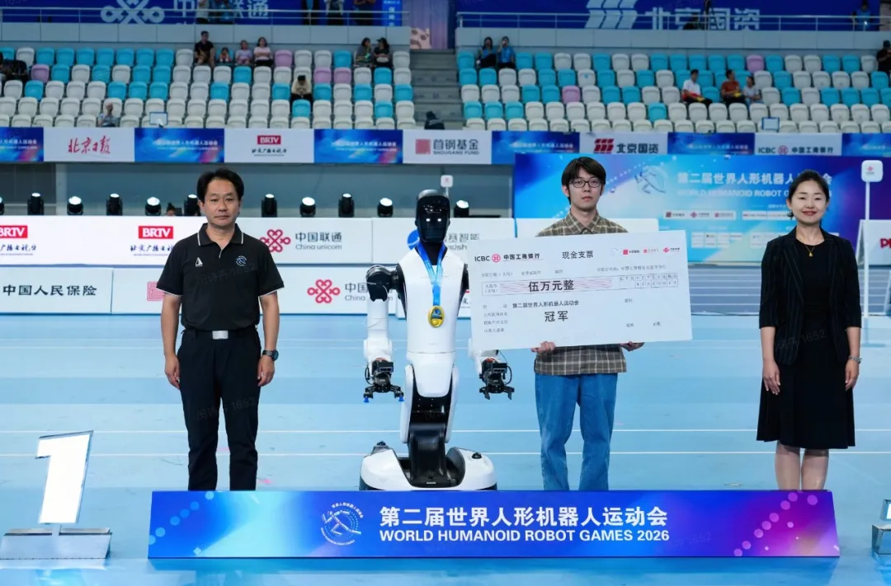
这，才是真正具备商业化落地参考价值的「第一」！

这次运动会的灵巧手专项比赛，总共就8枚金牌。
结果，智元临界点派出的量产版灵巧手OmniHand，直接一口气拿下了7块！差点实现包场了。
仔细看，它拿了第一的这些项目，简直堪称是地狱级难度。
「粉末称重」这一项，考验的是极其精细的微操。
面对极轻的粉末，OmniHand能够像经验丰富的老师傅一样，精准控制倾倒的角度和力度，稳稳拿捏住毫厘之差。
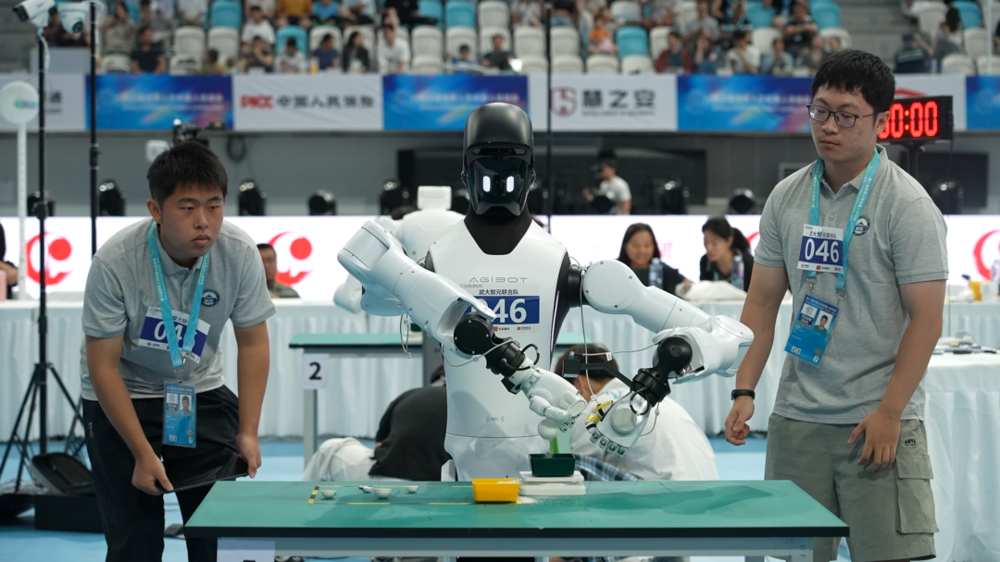
在「开瓶撬盖」环节，它又瞬间切换了模式，不仅要有足够的力量，还要懂得在接触瞬间寻找支点、爆发巧劲，整个动作一气呵成。
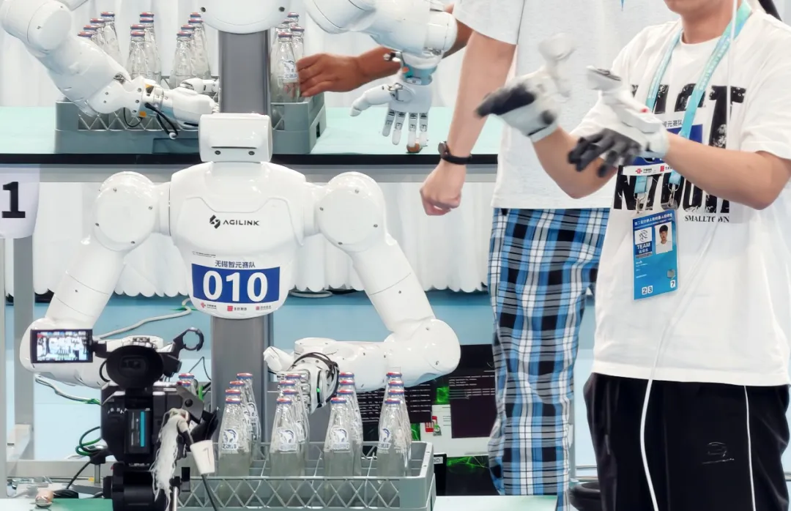
而在「拆箱拆包」和「积木搭建」中，则对机器人的柔性操作、空间感知和精密逻辑，都有近乎变态的高要求。
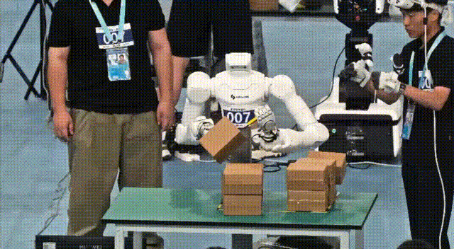
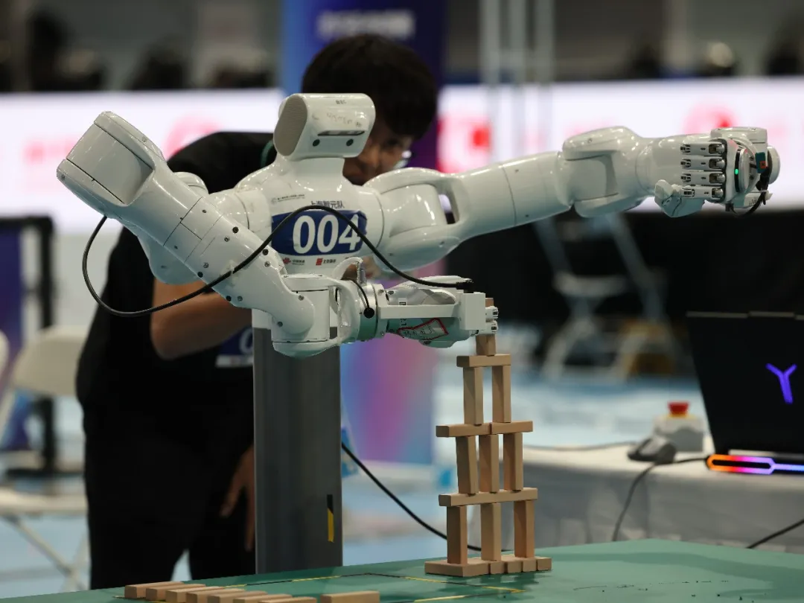
结果，出乎所有人意料：OmniHand不仅能轻柔地剥离包装而不损坏内件，还能迅速识别积木形状，搭出稳固的高塔！
在这些多维度的考察中，OmniHand都做到断崖式领先。
这背后，不仅仅是硬件的稳定可靠，更核心的秘密在于它是一只「AI Ready」的灵巧手。
过去，传统的机械手完全依赖提前写好的代码。但OmniHand，靠的是一颗聪明的「大脑」。
智元临界点为其量身自研了「DUET双层具身接触智能架构」。
它就像是人类的小脑和指尖神经的结合体。外层负责「位姿控制」，让手知道该怎么伸过去、角度怎么调整；内层则负责「触觉控制」，让机械手拥有人类皮肤般的「触觉感知」。
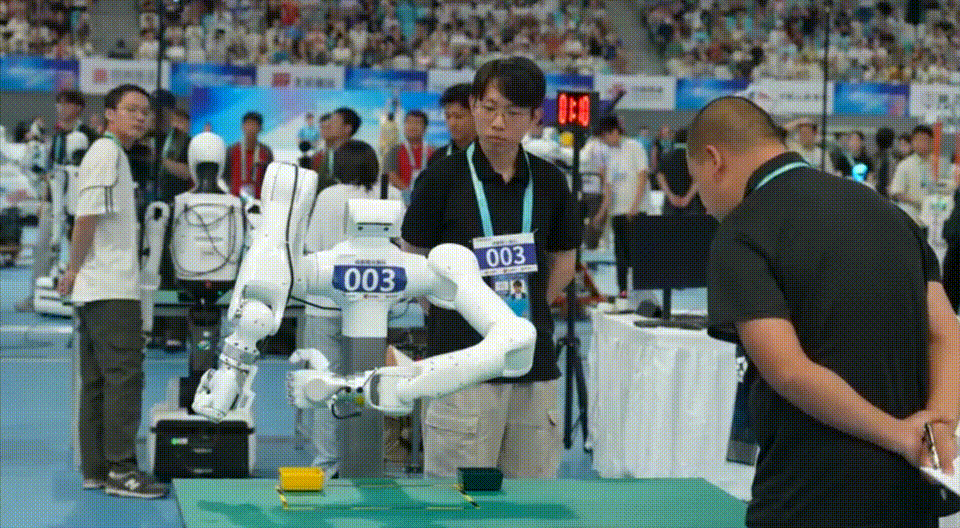
灵巧手表演镊子夹豆子
当OmniHand触碰到物体的那一瞬间，它能真切感知到物体的软硬、纹理和滑动趋势，并能在毫秒级内通过AI算法，动态调整抓握力。
这种强大的模型鲁棒性，使得OmniHand根本不需要人类遥控，就能全自主完成复杂挑战。
这就是为什么，OmniHand能在精细作业上，展现出惊人的「部署态」实力——
它不是在表演抓取，它是在真实地理解物理世界！
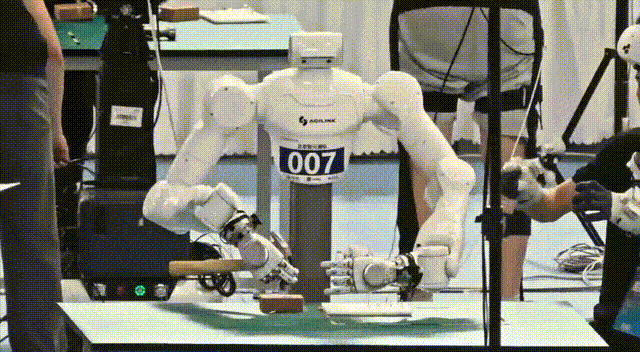
灵巧手钉钉固定
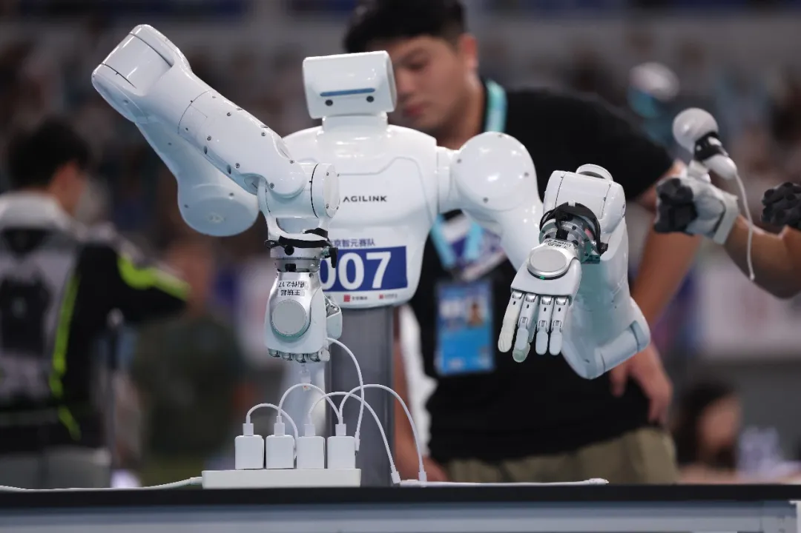
灵巧手完成线缆连接

在舞蹈、武术、乒乓球以及田径赛道上，智元机器人则彻底释放了「狂野」。
在这几个项目中，智元再次斩获5金！
其中，远征A3凭借全身运动控制能力，把一套太极拳打得行云流水。
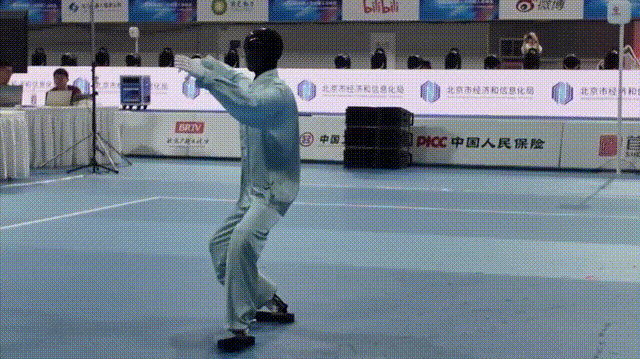
一支国标舞，也被它跳得韵律感十足。
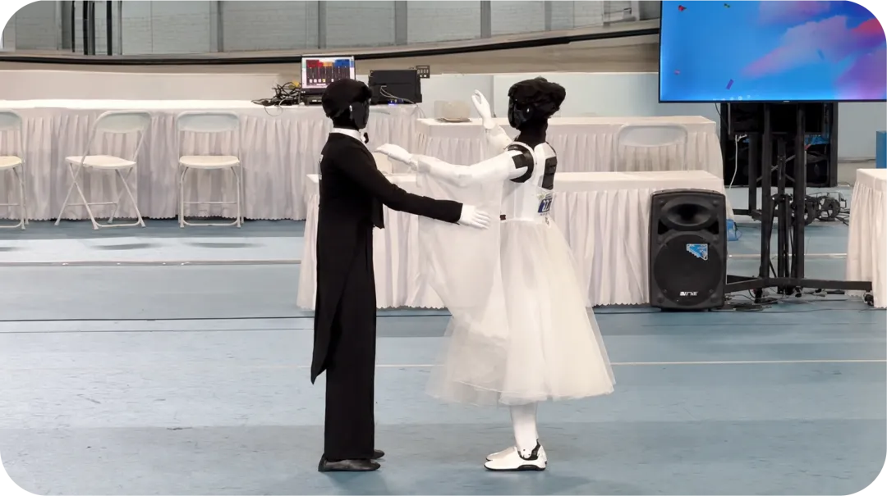
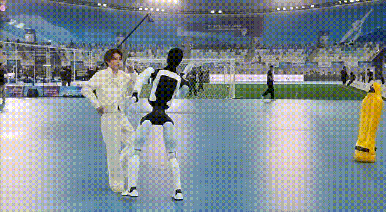
智元机器人和刘雨昕现场热舞
乒乓球赛场上，它还和奥运冠军丁宁打得有来有回。
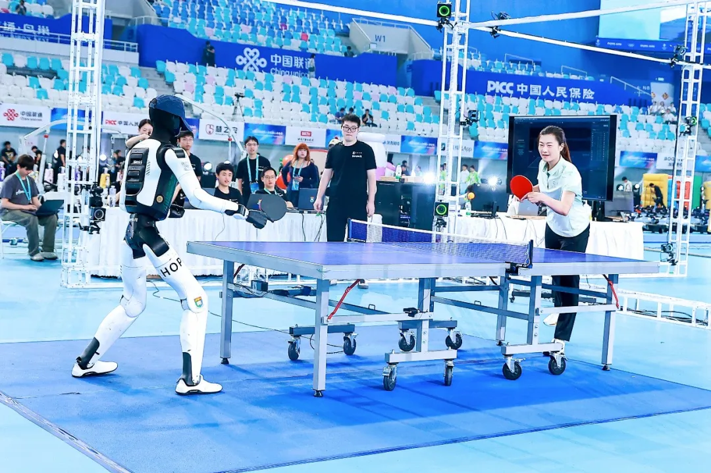
即便是「双机」对战，接球动作依然是行云流水。
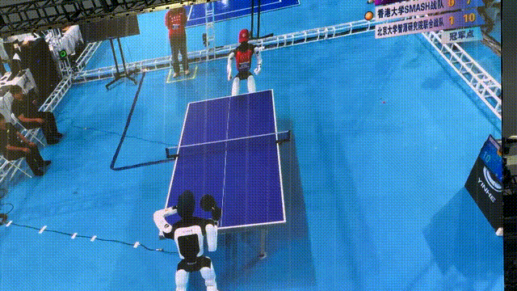
可以说，它不仅仅是在「动」，而是在挑战人形机器人的物理极限：腾空跳跃、大角度转体、单腿长时间支撑、甚至极其考验核心力量的低重心姿态无缝切换！
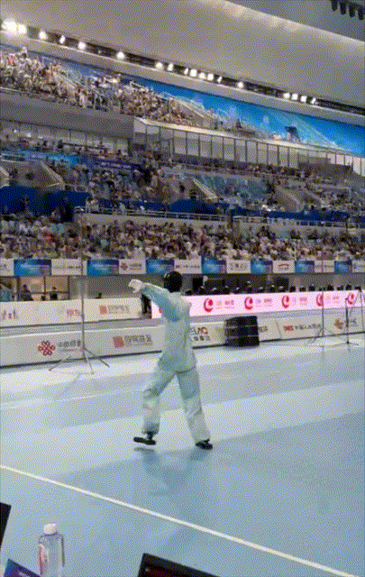
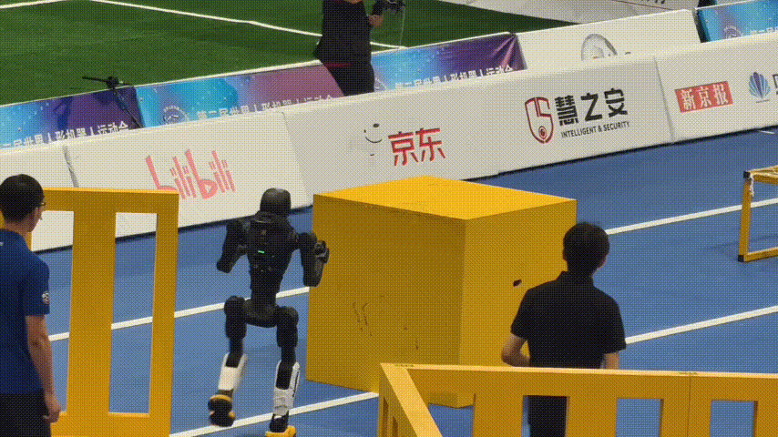
这一切，都依托于智元自研的运动预训练模型和全身协同控制算法。
通过「灵创平台」海量运动数据的投喂，它掌握了通用运动先验知识，并通过强大的Sim2Real能力，将仿真训练迁移到机器人。
而在田径赛场上，智元灵犀X2更是贡献出精彩表演。
在田径100米障碍赛和400米障碍赛中，灵犀X2在无任何本体改装的情况下，硬是斩获1金、1银、1铜。
面对赛道上的不规则障碍物，大多数参赛机器人还停留在仅依赖「关节本体感知」的阶段，但智元灵犀X2，却早早装上了「眼睛」。
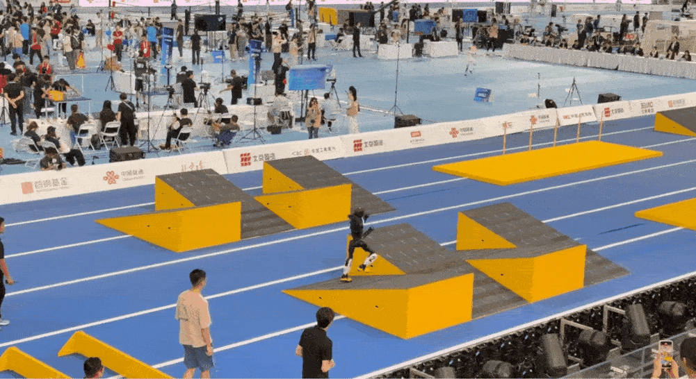
之前的机器人运动会，很多都在这一关折戟了，灵犀X2却行动自如
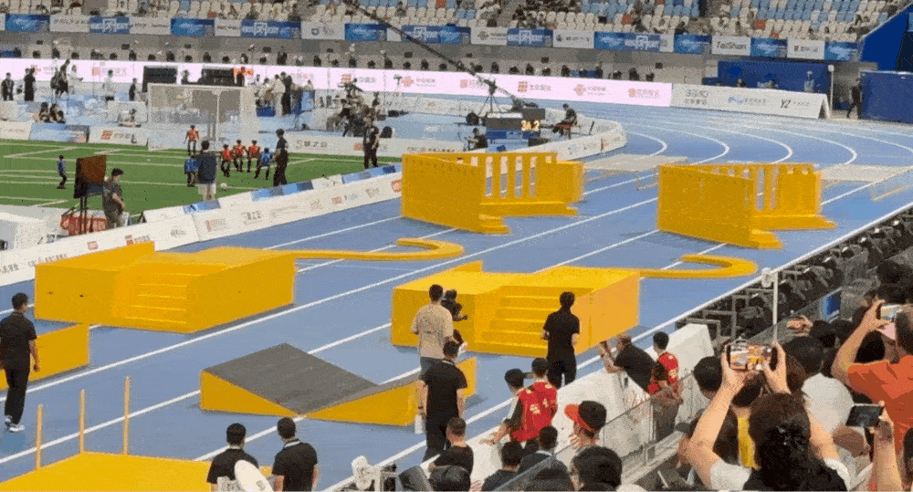
许多机器人在这一关摔惨了，甚至直接退出比赛
这背后，就是智元搭载的生成式通用小脑引擎框架AGILE。
在这个强悍的小脑驱动下，灵犀X2在强化学习运动控制算法。
它不仅能在通过不规则障碍物时兼具速度与稳定，还能在多种复杂地形下实现自主或半自主的瞬间决策。
更绝的是，通过精准的参数辨识，智元显著缩小了虚拟仿真与现实之间的差距，确保了这套算法在比赛中拥有极强的鲁棒性。
这，正是具身AI大脑赋予机器人的真正「灵魂」！
如果你觉得机器人只是用来拿奖的，那就大错特错了。
这次运动会的场景赛板块，考核的可是实打实的社会作业能力——图书馆理书、消防应急灭火、酒店客房整理……这些人类要干的活，都是真的繁琐。
结果，在这个板块的12块金牌中，智元精灵G2直接豪取6金！
酒店、图书馆里的活儿有多难？
图书馆理书，要识别书籍、规划顺序、精准取放；酒店整理，要处理柔软、形态不固定的物品；消防灭火，要在陌生环境里完成感知、移动和操作。
在这些真实任务中，如果机器人看不懂环境、规划不了长任务，或者手上稍微失准，整套流程立刻卡住。
而且，真实工作也很少只有一个动作。
以图书馆理书为例，机器人要先找到目标书籍，判断书脊方向和抓取位置，再避开周围物体，把书送到正确位置。中间任何一步出现偏差，后续动作都得跟着调整。
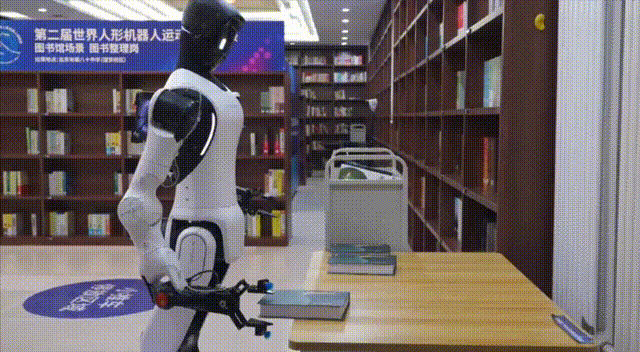
酒店整理同样麻烦，毛巾、床品等柔性物体形态随时变化，传统程序很难靠固定坐标解决。
消防灭火则把要求继续拉高，机器人要在开放环境中完成移动、识别、决策和操作，还要面对突发干扰。
这些项目，看起来没有跑跳翻滚那么炸裂，却更接近机器人真正进入社会后的工作日常。
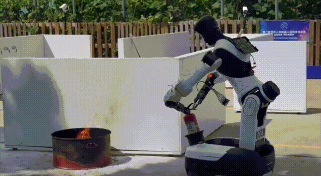
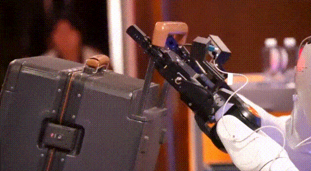
对智元来说，这些题并不陌生。
参赛的精灵G2，早已进入龙旗科技、上汽等真实产线。
此前，8台G2在龙旗工厂连续6天覆盖整条平板质检工段，完成多媒体界面、音频、辐射杂散发射和耦合等多道检测，生产产品超过17500件，作业成功率达到99.99%。
它参加运动会之前，已经在工厂里上过班了。
能在这种环境中稳定工作，机器人才能积累真正有价值的「工龄」。这些真实部署经验，又会反过来提高它在陌生任务中的稳定性。
赛场由此成了一次高密度的商业化预演。
今天能整理酒店、归置图书、处理险情，明天对应的就是服务、公共空间和特种作业里的真实岗位。
这一切优异的成绩，归根结底源于智元深厚的全栈技术，而后者的核心灵魂，就在于「具身AI大脑」！
智元把自己的技术底座总结成四个字「三智一体」：一个可靠的本体，加上运动智能、交互智能、作业智能三层大脑。
四肢发达还得头脑灵活，能说会道还得干活利索，缺一不可。
这次比赛，恰好把三层大脑各考了一遍。
田径障碍赛，考的是运动智能。智元给灵犀X2装上了「真正的眼睛」，靠自研的AGILE生成式小脑引擎。
它让机器人能在多种地形下实现自主或半自主决策。不仅跑得快，而且走得稳。
在作业智能方面，智元依托自研的ViLLA具身基座大模型GO、世界模型GE和大规模分布式RW-RL构建了强大的智能系统。
这套AI能力有多硬，第三方榜单已经投过票——GE 2.0登顶具身领域权威榜单WorldArena全球第一！
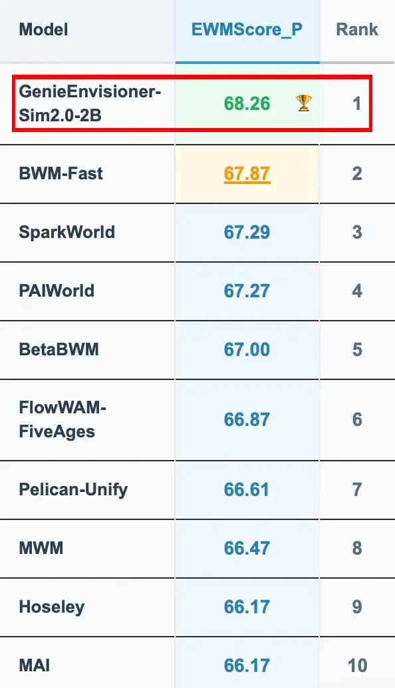
这意味着机器人不是在执行死程序，而是能够自主感知、理解物理世界，在真实环境中闭环完成复杂任务，甚至具备跨本体、小样本的快速泛化能力！
另外，在交互智能层面，WITA-Omni Preview登顶了DailyOmni全模态理解榜单，在八项细分指标中六项第一。
它把看、听、说、动整合为一个连续过程，让机器人成为一个拥有在场感的交互伙伴。
更妙的是，这颗大脑会越用越聪明。
机器人在产线、在赛场干的每一件活，都会变成数据自动回流，喂给下一代模型。
智元把这叫「部署态数据飞轮」，干得越多，攒的数据越多，下一版就越强。
这也是为什么它敢让量产机直接上赛场：因为这些机器人本来就在真实世界里日夜训练，赛场只是它众多「工位」中新添的一个。
身体是载体，大脑才是胜负手。
这届运动会真正的冠军，是那颗跑在机器人体内、还在不断进化的具身AI大脑。
总之，这次智元机器人的金牌，含量超高。
这一次，2056台人形机器人会师北京「冰丝带」，51个赛项、1301场对决，除障碍赛外所有竞技项目都要求全自主完成。
就拿竞速项目来说，今年100米障碍赛50支队伍参赛，37支未能完赛，赛场淘汰率肉眼可见。
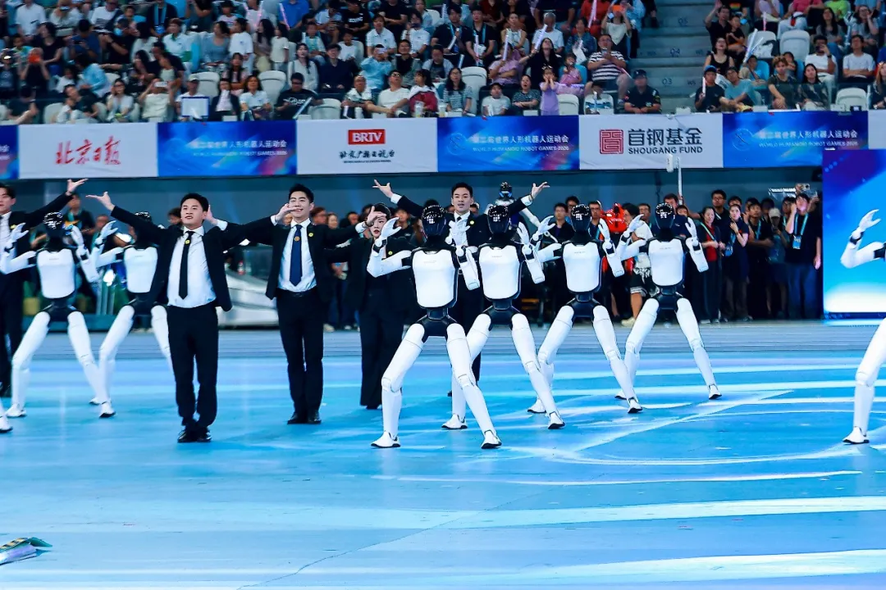
更加推高含金量的，就是智元用的是量产级。
原因很简单，定制样机可以围绕一个项目，把速度、结构和算法推到极限。
然而，量产机面对的约束多得多：成本要可控，结构要稳定，零部件要一致，还得经得起高强度连续运行。
所以，量产机的成绩更加意义重大：它验证的不只是实验室里的性能上限，还有产品一致性、可靠性和真实交付能力。
翻遍参赛名单，很多队伍会为比赛做特化——换更轻的外壳、上更贵的传感器、针对单一赛项调一版专用程序。
然而，这种赛场特供机，和现实应用却隔得很远。
在本场赛事上，智元派上场的，全部是量产机。
远征A3量产机上场比武术和舞蹈，精灵G2量产机上场做酒店整理和图书馆理书，灵犀X2量产机上场跑100米障碍赛，OmniHand量产版灵巧手上场做粉末称重和积木搭建。
其中，灵巧手专项8块金牌拿了7块，场景赛12块金牌拿了6块，竞技赛拿了5块金牌，田径赛也有金牌入账。
四类产品，四种形态，面对的是完全不同的任务。
最终都能站上领奖台，说明智元的优势已经跨过单点能力，进入平台化输出阶段！
回到今年4月APC 2026大会上，智元创始人邓泰华首次提出的那个判断——
2026年，是部署态的元年。
具身智能正式从「开发态」迈入「部署态」，从「能动」走向「会干」。
他为整个具身智能行业，画了一条坐标，即XYZ曲线。
X曲线是开发尝鲜期，机器人能动起来了，做表演、做展示、提供情绪价值。
Y曲线是部署成长期，机器人从「能动」变成「会干活」，开始创造真实生产力。
Z曲线是终局，智能涌现，机器人通过物理世界的「图灵测试」。
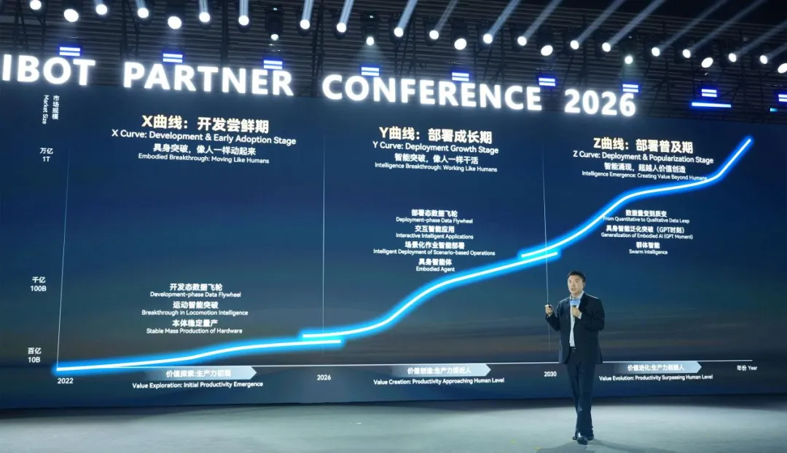
这场运动会看似仍是一场竞技，题目却已经明显向Y曲线靠拢。
同一批量产机器人，既能完成高动态竞技，也能处理酒店、图书馆、应急处置等真实任务。
同一套AI底座，能够跨本体、跨项目迁移。赛场验证的能力，已经在产线上常态化运行。
截至6月底，智元第15000台具身机器人已经下线。从万台量产，到真实部署，再到量产机双榜第一，几条原本分散的线开始合到一起。
本体、数据、模型、场景，由此形成一个闭环。
这也让智元成为行业首家、也是目前唯一实现部署态的企业。
比赛结束后，金牌会被放进展柜。
但这些量产机器人，还会继续回到工厂、酒店、图书馆和更多真实岗位上班。
赛场赢一次是成绩，真实世界每天都能赢，才是产业的分水岭。
编辑：Aeneas 桃子